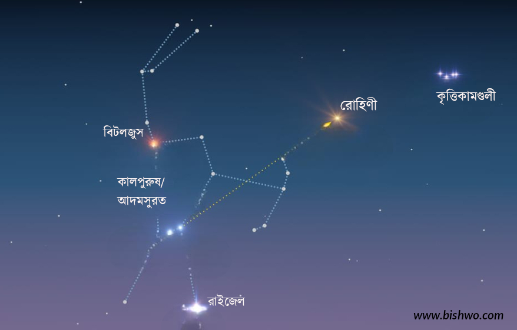
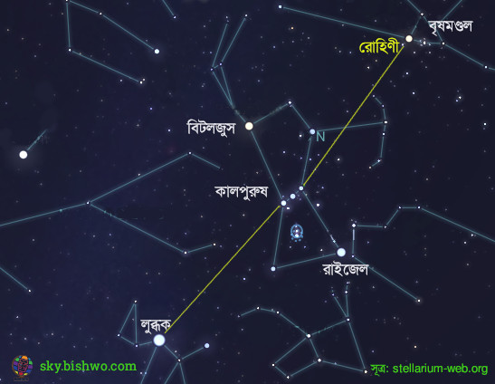

এ মাসের তারা: রোহিণী
রাতের আকাশে একেক মাসে একেক তারাদের মিলনমেলা বসে। সূর্যের চারদিকে পৃথিবীর ঘূর্ণনের কারণে বদলে যায় আকাশপট। আর সে কারণেই শীতের উজ্জ্বল তারাদের গ্রীষ্মের আকাশে দেখা প্রায় দেখা যায় না। এদের অনেকেই তখন আসলে থাকে দিনের আকাশে। বর্তমান রাতের আকাশের উজ্জ্ল একটি তারা রোহিণী। বৃষমণ্ডলের এ তারা নিয়েই শুরু হলো নতুন আয়োজন।
শুরু করছি রাতের আকাশের চতুর্দশ উজ্জ্বল তারার গল্প দিয়ে। নাম রোহিণী। অবস্থান বৃষমণ্ডলে (Taurus)। এ মণ্ডলটা রাশিচক্রের ১২টি (বর্তমানে ১৩টি) মণ্ডলের অন্যতম। সূর্যকে আকাশের ৮৮টি মণ্ডলের যেগুলোর ওপর দিয়ে চলছে মনে হয় সে তারামণডলগুলোরই নাম রাশিচক্র। ইংরেজি নাম অ্যালডেবারান এসেছে আরবি উৎস থেকে। অর্থ অনুসারী। তারাটা পাশের কৃত্তিকামণ্ডলকে (Pleiades)অনুসরণ করে বলে মনে হয় বলেই এ নাম। মণ্ডলের উজ্জ্বলতম তারা হিসেবে তারাটার বেয়ার নাম আলফা টোরাই। দেখতে একটি তারা মনে হলেও আসলে আমরা দুটো তারার মিলিত আলোকে রোহিণী হিসেবে দেখি। আরকেটি তারা অবশ্য বেশ (৯৬ হাজার গুণ) অুনজ্জ্বল। নাম আলফা টোরাই বি।

রাতের আকাশে খুব সহজেই তারাটাকে খুঁজে পাওয়া যায়। আগেই বলেছি, তারাটা আছে বৃষমণ্ডলে। আর এ মণ্ডল দেখার সেরা সময় জানুয়ারি মাসের রাত নয়টা। মণ্ডলটা দেখা যায় না শুধু মে-জুন মাসে। বছরের বাকি সময় রাতের কোনো না কোনো সময় একে দেখা যাবেই। জানুয়ারির পরের মাসগুলোতে প্রতিদিন আগের দিনের চেয়ে আগে সন্ধ্যার পর পশ্চিমে হেলতে থাকে।
ডিসেম্বরের শুরুতেই সন্ধ্যার একটু পরে উত্তর গোলার্ধের আকাশে এটি উদিত হয়। প্রায় সারারাত আকাশে থাকে। সকালের দিকে ডুবে যায়। তিন মাস পরে সন্ধ্যার সময়ই এটি মাথার উপর চলে আসে। মধ্যরাতে ডুবে যায়। মে মাসের শুরুতেই সন্ধ্যায় দিগন্তের কাছে চলে যায়। মে মাস শেষ হতে হতে হারিয়ে যায় দিগন্তের ওপারে। ডুবে যায় সন্ধ্যার আগেই। জুনের শেষ দিকে আবার ভোরের আকাশে দেখা যায়। পূর্ব আকাশে সূর্যের আগে উদিত হয়।
একে খুঁজে পেতে কাজে লাগে আদমসুরত বা কালপুরুষ মণ্ডল। মানুষের আকৃতির এ মণ্ডলের কোমরের তিন তারাকে বলে কালপুরুষ বেষ্টনী। বেষ্টনীর তিন তারাকে যোগ করে ডানে এগোলেই পাওয়া যাবে উজ্জ্বল তারা রোহিণিকে। একই রেখা ধরে আরও সামনে গেলেই পাওয়া যাবে কৃত্তিকা। তিনটি তারা থেকে বামে গেলে আবার পাওয়া যাবে রাতের আকাশের সবচেয়ে উজ্জ্বল তারা লুব্ধক।

রোহিণীর বিষুব লম্ব (declination) ১৬.৫ ডিগ্রি। বাংলাদেশ থেকে দেখতে মাথার ওপর থেকে কিছুটা দক্ষিণ দিয়ে চলে এটি। সূর্যপথ থেকে ৫.৪৭ ডিগ্রি দক্ষিণে এর অবস্থান। ফলে সময় সময় চাঁদ একে ঢেকে দেয়৷ পৃথিবীর চারপাশে চাঁদের কক্ষপথ সূর্যপথের সাপেক্ষে ৫.১৫ ডিগ্রি হেলে আছে। চাঁদ বেশিরভাগ সময় সূর্যপথের এপাশ বা ওপাশে থাকে। মাসে দুইবার সূর্যপথকে অতিক্রম করে উত্তরে-দক্ষিণে আসে। এ কারণে সৌরজগতের অন্য বস্তু থেকে চাঁদকে একটু দূরে উত্তর বা দক্ষিণে দেখা যায়।
রোহিণীর পাশেই আছে দুটি উজ্জ্বল তারানকশা। আছে কৃত্তিকা ও হায়াডিস নক্ষত্রপুঞ্জ। পাশে বলতে আকাশপটে পাশে। পৃথিবী থেকে দেখতে। বাস্তবে রোহিণীর সাথে কোনোটিরই কোনো সম্পর্কে নেই। দুটোরই অবস্থান তারাটি থেকে অনেক দূরে। কৃত্তিকার দূরত্ব পৃথিবী থেকে ৪৪৪ আলোকবর্ষ। আরও কাছে আছে আরেক বিখ্যাত নক্ষত্রপুঞ্জ হায়াডিজ। দূরত্ব ১৪৪ আলোকবর্ষ। এর সাথে জড়িয়ে আছে বিখ্যাত এক ইতিহাস (আলোর মহাকর্ষীয় বক্রতার প্রমাণ। সে গল্প আরেকদিন)।
৬৫ আলোকবর্ষ দূরের রোহিণী তারাটি বৃষমণ্ডলেরও উজ্জ্বলতম তারা। এটি একটি লোহিত দানব ধরনের তারা। পৃষ্ঠের তাপমাত্রা সূর্যের চেয়ে কম (৩৯০০ কেলভিন, যেখানে সূর্যের ৫৭০০ কেলভিন)। তবে আকারে সূর্যের তুলনায় অনেক বড়। ব্যাসার্ধ সূর্যের ৪৫ গুণ। একে সূর্যের জায়গায় বসিয়ে দেওয়া হলে বুধের কক্ষপথও এর ভেতর চলে যাবে। অভ্যন্তরীণ উজ্জ্বলতা বা দীপ্তি সূর্যের ৪০০ গুণেরও বেশি।
তারাটি বিষম। মানে সময়ের সাথে সাথে উজ্জ্বলতার পরিবর্তন হয়। তবে সে পরিবর্তন খালি চোখে বোঝা যায় না। খুব ধীরে আবর্তন করে। পূর্ণ এক আবর্তনে সময় লাগে ৫২০ দিন। যেখানে সূর্যের লাগে প্রায় ২৭ দিন।
মহাকাশ অভিযানের সাথে রোহিণীর একটি মজার ব্যাপার আছে। ১৯৭২ সালে যাত্রা শুরু করা নাসার মহাকাশ অনুসন্ধানী যান পাইওনিয়ার ১০ প্রায় ২০ লক্ষ বছর পর নক্ষত্রটাকে অতিক্রম করবে। যদিও যানটির সাথে পৃথিবীর এখন আর কোনো যোগোযোগ নেই।
সূত্র: আর্থস্কাই